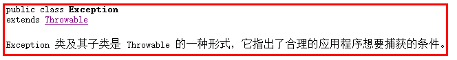
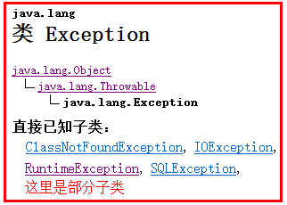
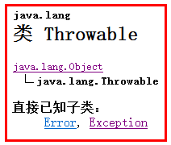
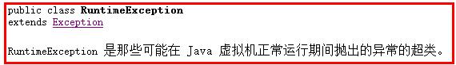
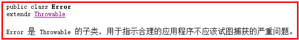
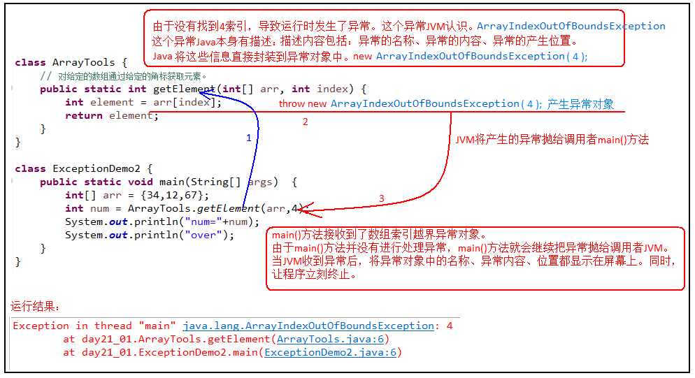
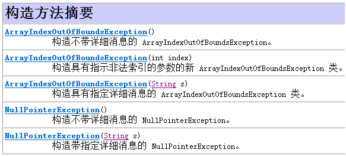
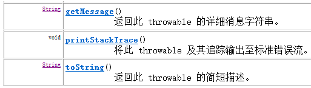

什么是异常？Java代码在运行时期发生的问题就是异常。
在Java中，把异常信息封装成了一个类。当出现了问题时，就会创建异常类对象并抛出异常相关的信息（如异常出现的位置、原因等）。
在Java中使用Exception类来描述异常。

查看API中Exception的描述，Exception 类及其子类是 Throwable 的一种形式，它用来表示java程序中可能会产生的异常，并要求对产生的异常进行合理的异常处理。
继续观察，我们可以发现Exception有继承关系，它的父类是Throwable。Throwable是Java 语言中所有错误或异常的超类，即祖宗类。


另外，在异常Exception类中，有一个子类要特殊说明一下，RuntimeException子类，RuntimeException及其它的子类只能在Java程序运行过程中出现。

我们再来观察Throwable类，能够发现与异常Exception平级的有一个Error，它是Throwable的子类，它用来表示java程序中可能会产生的严重错误。解决办法只有一个，修改代码避免Error错误的产生。

异常继承体系总结：
Throwable: 它是所有错误与异常的超类（祖宗类）
Error 错误
Exception 编译期异常,进行编译JAVA程序时出现的问题
RuntimeException 运行期异常, JAVA程序运行过程中出现的问题
异常：指程序在编译、运行期间发生了某种异常(XxxException)，我们可以对异常进行具体的处理。若不处理异常，程序将会结束运行。
异常的产生演示如下：
public static void main(String[] args) {
int[] arr = new int[3];
System.out.println(arr[0]);
System.out.println(arr[3]);
// 该句运行时发生了数组索引越界异常ArrayIndexOutOfBoundsException，由于没有处理异常，导致程序无法继续执行，程序结束。
System.out.println("over"); // 由于上面代码发生了异常，此句代码不会执行
}错误：指程序在运行期间发生了某种错误(XxxError)，Error错误通常没有具体的处理方式，程序将会结束运行。Error错误的发生往往都是系统级别的问题，都是jvm所在系统发生的，并反馈给jvm的。我们无法针对处理，只能修正代码。
错误的产生演示如下：
public static void main(String[] args) {
int[] arr = new int[1024*1024*100];
//该句运行时发生了内存溢出错误OutOfMemoryError，开辟了过大的数组空间，导致JVM在分配数组空间时超出了JVM内存空间，直接发生错误。
}先运行下面的程序，程序会产生一个数组索引越界异常ArrayIndexOfBoundsException。我们通过图解来解析下异常产生的过程。
工具类
class ArrayTools{
//对给定的数组通过给定的角标获取元素。
public static int getElement(int[] arr,int index) {
int element = arr[index];
return element;
}
}测试类
class ExceptionDemo2 {
public static void main(String[] args) {
int[] arr = {34,12,67};
int num = ArrayTools.getElement(arr,4)
System.out.println("num="+num);
System.out.println("over");
}
}上述程序执行过程图解：

在编写程序时，我们必须要考虑程序出现问题的情况。比如，在定义方法时，方法需要接受参数。那么，当调用方法使用接受到的参数时，首先需要先对参数数据进行合法的判断，数据若不合法，就应该告诉调用者，传递合法的数据进来。这时需要使用抛出异常的方式来告诉调用者。
在java中，提供了一个throw关键字，它用来抛出一个指定的异常对象。那么，抛出一个异常具体如何操作呢？
1,创建一个异常对象。封装一些提示信息(信息可以自己编写)。
2,需要将这个异常对象告知给调用者。怎么告知呢？怎么将这个异常对象传递到调用者处呢？通过关键字throw就可以完成。throw 异常对象；
throw用在方法内，用来抛出一个异常对象，将这个异常对象传递到调用者处，并结束当前方法的执行。
使用格式：
throw new 异常类名(参数);例如：
throw new NullPointerException("要访问的arr数组不存在");
throw new ArrayIndexOutOfBoundsException("该索引在数组中不存在，已超出范围");下面是异常类ArrayIndexOutOfBoundsException与NullPointerException的构造方法

学习完抛出异常的格式后，我们通过下面程序演示下throw的使用。
编写工具类，提供获取数组指定索引处的元素值
class ArrayTools{
//通过给定的数组，返回给定的索引对应的元素值。
public static int getElement(int[] arr,int index) {
/*
若程序出了异常，JVM它会打包异常对象并抛出。但是它所提供的信息不够给力。想要更清晰，需要自己抛出异常信息。
下面判断条件如果满足，当执行完throw抛出异常对象后，方法已经无法继续运算。这时就会结束当前方法的执行，并将异常告知给调用者。这时就需要通过异常来解决。
*/
if(arr==null){
throw new NullPointerException("arr指向的数组不存在");
}
if(index<0 || index>=arr.length){
throw new ArrayIndexOutOfBoundsException("错误的角标，"+index+"索引在数组中不存在");
}
int element = arr[index];
return element;
}
}测试类
class ExceptionDemo3 {
public static void main(String[] args) {
int[] arr = {34,12,67}; //创建数组
int num = ArrayTools.getElement(null,2);// 调用方法，获取数组中指定索引处元素
//int num = ArrayTools.getElement(arr,5);// 调用方法，获取数组中指定索引处元素
System.out.println("num="+num);//打印获取到的元素值
}
}声明：将问题标识出来，报告给调用者。如果方法内通过throw抛出了编译时异常，而没有捕获处理（稍后讲解该方式），那么必须通过throws进行声明，让调用者去处理。
声明异常格式：
修饰符 返回值类型 方法名(参数) throws 异常类名1,异常类名2… { }声明异常的代码演示：
class Demo{
/*
如果定义功能时有问题发生需要报告给调用者。可以通过在方法上使用throws关键字进行声明。
*/
public void show(int x)throws Exception {
if(x>0){
throw new Exception();
} else {
System.out.println("show run");
}
}
}throws用于进行异常类的声明，若该方法可能有多种异常情况产生，那么在throws后面可以写多个异常类，用逗号隔开。
多个异常的情况，例如:
public static int getElement(int[] arr,int index) throws NullPointerException, ArrayIndexOutOfBoundsException {
if(arr==null){
throw new NullPointerException("arr指向的数组不存在");
}
if(index<0 || index>=arr.length){
throw new ArrayIndexOutOfBoundsException("错误的角标，"+index+"索引在数组中不存在");
}
int element = arr[index];
return element;
}捕获：Java中对异常有针对性的语句进行捕获，可以对出现的异常进行指定方式的处理
捕获异常格式：
ctry：该代码块中编写可能产生异常的代码。
catch：用来进行某种异常的捕获，实现对捕获到的异常进行处理。
finally：有一些特定的代码无论异常是否发生，都需要执行。另外，因为异常会引发程序跳转，导致有些语句执行不到。而finally就是解决这个问题的，在finally代码块中存放的代码都是一定会被执行的。
演示如下：
class ExceptionDemo{
public static void main(String[] args){ //throws ArrayIndexOutOfBoundsException
try {
int[] arr = new int[3];
System.out.println( arr[5] );// 会抛出ArrayIndexOutOfBoundsException
当产生异常时，必须有处理方式。要么捕获，要么声明。
}
catch (ArrayIndexOutOfBoundsException e) { //括号中需要定义什么呢？try中抛出的是什么异常，在括号中就定义什么异常类型。
System.out.println("异常发生了");
} finally {
arr = null; //把数组指向null，通过垃圾回收器，进行内存垃圾的清除
}
System.out.println("程序运行结果");
}
}try catch finally组合：检测异常，并传递给catch处理，并在finally中进行资源释放。
try catch组合 : 对代码进行异常检测，并对检测的异常传递给catch处理。对异常进行捕获处理。
void show(){ //不用throws
try{
throw new Exception();//产生异常，直接捕获处理
}catch(Exception e){
//处理方式
}
}一个try 多个catch组合 : 对代码进行异常检测，并对检测的异常传递给catch处理。对每种异常信息进行不同的捕获处理。
void show(){ //不用throws
try{
throw new Exception();//产生异常，直接捕获处理
}catch(XxxException e){
//处理方式
}catch(YyyException e){
//处理方式
}catch(ZzzException e){
//处理方式
}
}注意:这种异常处理方式，要求多个catch中的异常不能相同，并且若catch中的多个异常之间有子父类异常的关系，那么子类异常要求在上面的catch处理，父类异常在下面的catch处理。
try finally 组合: 对代码进行异常检测，检测到异常后因为没有catch，所以一样会被默认jvm抛出。异常是没有捕获处理的。但是功能所开启资源需要进行关闭，所有finally。只为关闭资源。
void show(){//需要throws
try{
throw new Exception();
}finally {
//释放资源
}
}
RuntimeException和他的所有子类异常,都属于运行时期异常。NullPointerException,ArrayIndexOutOfBoundsException等都属于运行时期异常.
运行时期异常的特点:
方法中抛出运行时期异常,方法定义中无需throws声明,调用者也无需处理此异常
运行时期异常一旦发生,需要程序人员修改源代码.
class ExceptionDemo{
public static void main(String[] args){
method();
}
public static void method(){
throw new RuntimeException();
}
}
子类覆盖父类方法时，如果父类的方法声明异常，子类只能声明父类异常或者该异常的子类，或者不声明。
例如：
class Fu {
public void method () throws RuntimeException {
}
}
class Zi extends Fu {
public void method() throws RuntimeException { } //抛出父类一样的异常
//public void method() throws NullPointerException{ } //抛出父类子异常
}
当父类方法声明多个异常时，子类覆盖时只能声明多个异常的子集。
例如：
class Fu {
public void method () throws NullPointerException, ClassCastException{
}
}
class Zi extends Fu {
public void method()throws NullPointerException, ClassCastException { } public void method() throws NullPointerException{ } //抛出父类异常中的一部分
public void method() throws ClassCastException { } //抛出父类异常中的一部分
}
当被覆盖的方法没有异常声明时，子类覆盖时无法声明异常的。
例如：
class Fu {
public void method (){
}
}
class Zi extends Fu {
public void method() throws Exception { }//错误的方式
}
举例：父类中会存在下列这种情况，接口也有这种情况
问题：接口中没有声明异常，而实现的子类覆盖方法时发生了异常，怎么办？
答：无法进行throws声明，只能catch的捕获。万一问题处理不了呢？catch中继续throw抛出，但是只能将异常转换成RuntimeException子类抛出。
interface Inter {
public abstract void method();
}
class Zi implements Inter {
public void method(){ //无法声明 throws Exception
int[] arr = null;
if (arr == null) {
//只能捕获处理
try{
throw new Exception(“哥们，你定义的数组arr是空的!”);
} catch(Exception e){
System.out.println(“父方法中没有异常抛出，子类中不能抛出Exception异常”);
//我们把异常对象e，采用RuntimeException异常方式抛出
throw new RuntimeException(e);
}
}
}
}
在Throwable类中为我们提供了很多操作异常对象的方法，常用的如下：

getMessage方法：返回该异常的详细信息字符串，即异常提示信息
toString方法：返回该异常的名称与详细信息字符串
printStackTrace：在控制台输出该异常的名称与详细信息字符串、异常出现的代码位置
异常的常用方法代码演示：
try {
Person p= null;
if (p==null) {
throw new NullPointerException(“出现空指针异常了，请检查对象是否为null”);
}
} catch (NullPointerException e) {
String message = e.getMesage();
System.out.println(message );
String result = e.toString();
System.out.println(result);
e.printStackTrace();
}
在上述代码中，发现这些异常都是JDK内部定义好的，并且这些异常不好找。书写时也很不方便，那么能不能自己定义异常呢？
之前的几个异常都是java通过类进行的描述。并将问题封装成对象，异常就是将问题封装成了对象。这些异常不好认，书写也很不方便，能不能定义一个符合我的程序要求的异常名称。既然JDK中是使用类在描述异常信息，那么我们也可以模拟Java的这种机制，我们自己定义异常的信息，异常的名字，让异常更符合自己程序的阅读。准确对自己所需要的异常进行类的描述。
通过阅读异常源代码：发现java中所有的异常类，都是继承Throwable，或者继承Throwable的子类。这样该异常才可以被throw抛出。
说明这个异常体系具备一个特有的特性：可抛性：即可以被throw关键字操作。
并且查阅异常子类源码，发现每个异常中都调用了父类的构造方法，把异常描述信息传递给了父类，让父类帮我们进行异常信息的封装。
例如NullPointerException异常类源代码：
public class NullPointerException extends RuntimeException {
public NullPointerException() {
super();//调用父类构造方法
}
public NullPointerException(String s) {
super(s);//调用父类具有异常信息的构造方法
}
}
现在，我们来定义个自己的异常，即自定义异常。
格式：
Class 异常名 extends Exception{ //或继承RuntimeException
public 异常名(){
}
public 异常名(String s){
super(s);
}
}
自定义异常继承Exception演示
class MyException extends Exception{
/*
为什么要定义构造函数，因为看到Java中的异常描述类中有提供对异常对象的初始化方法。
*/
public MyException(){
super();
}
public MyException(String message) {
super(message);// 如果自定义异常需要异常信息，可以通过调用父类的带有字符串参数的构造函数即可。
}
}
自定义异常继承RuntimeException演示
class MyException extends RuntimeException{
/*
为什么要定义构造函数，因为看到Java中的异常描述类中有提供对异常对象的初始化方法。
*/
MyException(){
super();
}
MyException(String message) {
super(message);// 如果自定义异常需要异常信息，可以通过调用父类的带有字符串参数的构造函数即可。
}
}
定义Person类，包含name与age两个成员变量。
在Person类的有参数构造方法中，进行年龄范围的判断，若年龄为负数或大于200岁，则抛出NoAgeException异常，异常提示信息“年龄数值非法”。
要求：在测试类中，调用有参数构造方法，完成Person对象创建，并进行异常的处理。
自定义异常类
class NoAgeException extends Exception{
NoAgeException() {
super();
}
NoAgeException(String message) {
super(message);
}
}
Person类
class Person{
private String name;
private int age;
Person(String name,int age) throws NoAgeException {
//加入逻辑判断。
if(age<0 || age>200) {
throw new NoAgeException(age+",年龄数值非法");
}
this.name = name;
this.age = age;
}
//定义Person对象对应的字符串表现形式。覆盖Object中的toString方法。
public String toString() {
return "Person[name="+name+",age="+age+"]";
}
}
测试类
class ExceptionDemo{
public static void main(String[] args) {
try {
Person p = new Person("xiaoming",20);
System.out.println(p);
}
catch (NoAgeException ex){
System.out.println("年龄异常啦");
}
System.out.println("over");
}
}
总结一下，构造函数到底抛出这个NoAgeException是继承Exception呢？还是继承RuntimeException呢？
继承Exception，必须要throws声明，一声明就告知调用者进行捕获，一旦问题处理了调用者的程序会继续执行。
继承RuntimeExcpetion,不需要throws声明的，这时调用是不需要编写捕获代码的，因为调用根本就不知道有问题。一旦发生NoAgeException，调用者程序会停掉，并有jvm将信息显示到屏幕，让调用者看到问题，修正代码。